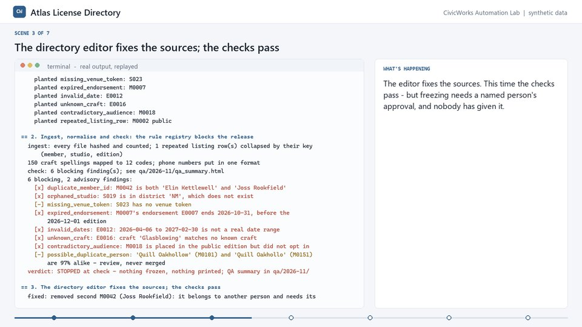
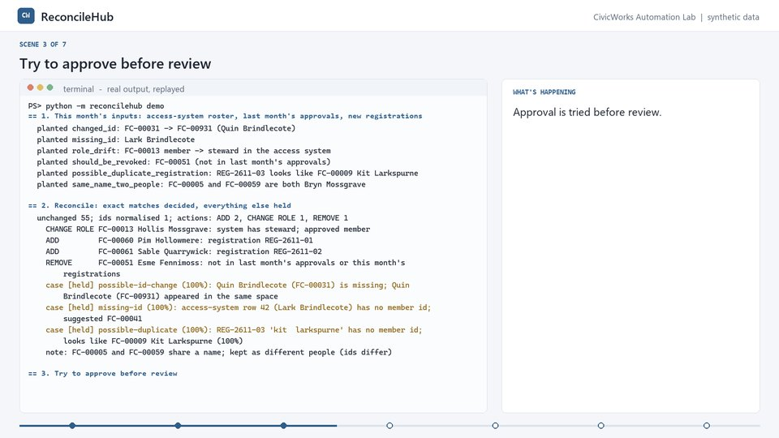
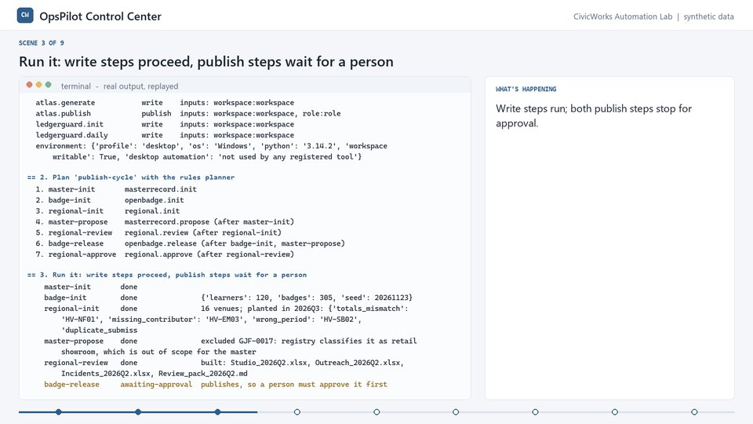

Data pipelines that catch bad data before anyone sees it.
Most data problems are not hard queries - they are a wrong number that gets published, a job that "succeeds" with nothing in it, or two systems that quietly disagree. These eight pipelines show how I stop that: every input is checked against rules, people approve what a rule cannot decide, outputs are verified before anyone sees them, and every run leaves evidence. All of it is tested on every change.
Each one turns a real kind of data work into something you can run

Atlas License Directory
A monthly printed directory that is checked, frozen, printed, verified and published - and can be rolled back.
Explore the flow →
OpenBadge Registry Publisher
A public data file that only goes live after it has been fetched back and proven identical.
Explore the flow →
Regional Programs Analytics
Quarterly Excel reports that refuse approval while the data is incomplete, and freeze once approved.
Explore the flow →
LedgerGuard Data Quality
Daily export checks that never mistake an empty file for success, with archives you can safely restore.
Explore the flow →
SafeSite Compliance Cycle
A quarterly safety-return cycle - reminders, checks, escalations and two Word reports - with nothing sent and no final overwritten.
Explore the flow →
MasterRecord Steward
Master records from three disagreeing sources - justified changes approved, the rest held for a person, nothing else touched.
Explore the flow →
ReconcileHub
Monthly access-roster reconciliation that suggests near-matches and never merges two people on a guess.
Explore the flow →
OpsPilot Control Center
One control room over the other pipelines - planned, checkpointed, approved by people, and unable to exceed its contracts.
Explore the flow →Seven pipelines and one operator
Each pipeline stands alone with its own data, rules and tests. OpsPilot runs them as one operation: it can prepare anything, but anything that publishes waits for a person.
The nine ideas behind all eightThe principles an interviewer will probe - in plain language
Every pipeline is a line of stations
Data goes in one end, passes stations in a fixed order - read it, clean it, check it, decide, build the output, check the output, release it, keep a copy - and comes out the other end. Each station does one job. When something goes wrong you know exactly which station caught it.
All the data is invented, on purpose, and repeatable
A generator program makes up every organisation, person and number from a starting number called a seed. Same seed, same data, byte for byte. It also plants specific mistakes so the checks have something real to catch, and the tests know exactly what should be caught.
Check before anything is used, and name the problem
Before data becomes an output, rules run over it. A blocking problem stops the run and says which record and why. An advisory problem is reported but does not stop it. Nothing is silently fixed or silently skipped.
The computer never guesses about what needs judgment
When two sources disagree and no rule settles it, or two names are almost the same, the pipeline holds the case and asks a named person. Their decision, with their role and reason, is recorded. Anything that is published also waits for a named approval.
Nothing good is ever overwritten
Releases, approved reports and snapshots are versioned. A new version is written next to the old one, never on top of it. A second approval of the same thing changes nothing; a real revision becomes version 2 with a reason.
Running it twice is safe
Every pipeline can be run again on the same inputs without duplicating anything: the same reminder is not drafted twice, the same decision is not applied twice, the same roster is not approved twice.
Fingerprints prove what happened
Every important file gets a SHA-256 fingerprint. Manifests list inputs and outputs with their fingerprints. A restore or rollback first re-checks the fingerprints; if a file has changed, it refuses.
Release all at once, or not at all
Outputs are built and checked in a staging area first. Releasing them is one quick swap - a rename or a pointer change - so readers see the whole new version or the whole old one, never half of each.
Every claim has a test, and every run leaves evidence
Each behaviour described in a README is checked by an automated test, and GitHub runs all the tests on fresh Linux and Windows machines after every change. Every run writes a manifest and readable reports.
How this was builtIncluding the honest answer about AI
An AI coding assistant wrote most of the code and documentation to my design. I decided what each pipeline had to do, which mistakes it had to catch, where a person must approve, and what the tests had to prove, and I reviewed the results. Nothing is claimed without a test that anyone can run.